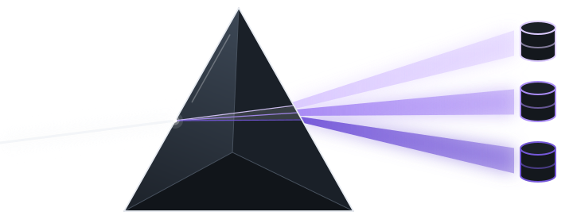
Informix, Db2 e PostgreSQL no mesmo lugar.
O Prism é um cliente de banco de dados para desktop, para quem trabalha todo dia com Informix, Db2 e PostgreSQL. A meta é ser mais rápido e mais direto que o DBeaver nas mesmas tarefas: abrir, conectar, navegar pelos objetos, rodar SQL e ver o resultado.
O Prism está no começo: a estável mais nova é a recomendada, e os betas podem ter defeitos. Os pacotes não têm assinatura de desenvolvedor: veja como abrir.

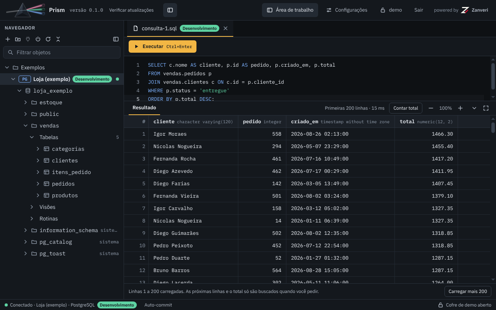
O que é o Prism
É um app de desktop para Windows, macOS e Linux. Você conecta no banco, navega pelos objetos e roda SQL. Cada usuário tem um cofre cifrado com as pastas e as conexões dele.
Por dentro, o app (Electron) inicia uma API local que só escuta em 127.0.0.1. A tela fala com ela, e ela fala com o banco.
| Banco | Driver | Estado |
|---|---|---|
| PostgreSQL | Vai dentro do pacote. | Funciona. |
| Db2 | Da IBM. Você o baixa em Configurações › Drivers. | Funciona com o Db2 12.1. |
| Informix | O mesmo driver da IBM. | Funciona com o Informix 14.10, pela porta DRDA. |
A grade de bancos também mostra SQLite, MySQL, MariaDB, SQL Server, Oracle, Firebird, DuckDB e ClickHouse como “Em breve”. O Prism ainda não conecta neles.
O que dá para fazer hoje
- Guardar conexões em pastas, cada uma com um ambiente (nome e cor).
- Navegar por esquemas, tabelas, visões, rotinas, colunas, índices e chaves estrangeiras, com busca.
- Rodar SQL e ver o resultado numa grade: carregar mais, contar o total, cancelar.
- Abrir uma tabela e ver os registros (com filtro e ordem), a estrutura e o diagrama.
- Escolher entre seis temas, claros e escuros.
- Baixar os drivers do Db2 e do Informix quando precisar.
- Receber atualizações pelas releases do GitHub, com um canal beta opcional.
Baixar e instalar
Estável ou beta. A estável mais nova fica marcada como Latest: é a recomendada. Os betas saem a cada merge na develop, aparecem marcados como Pre-release e podem ter defeitos. Os betas saem só para Windows e Linux: os pacotes de macOS vêm com as versões estáveis. Se uma versão saiu sem o pacote do seu sistema, o começo das notas dela diz isso.
Na página, abra a versão mais nova (a de cima) e, em Assets, escolha o arquivo do seu sistema. Nos nomes, <versão> é a da release, como 0.1.0 ou 0.1.1-beta.1.
| Sistema | Arquivo | Para quê |
|---|---|---|
| Windows x64 | Prism-<versão>-win-x64.exe | O instalador (recomendado): pede administrador para instalar para todos os usuários; se você negar, instala só para você. Ele se atualiza de dentro do app, e a instalação para todos pede administrador a cada atualização. |
| Windows x64 | Prism-<versão>-win-x64.zip | A cópia portátil, sem instalação. Cada atualização é um download novo. |
| Linux x64 | Prism-<versão>-linux-x86_64.AppImage | Roda na maioria das distribuições, sem instalar. |
| Linux x64 | Prism-<versão>-linux-amd64.deb | Debian, Ubuntu e derivadas. |
| Linux x64 | Prism-<versão>-linux-x86_64.rpm | Fedora, RHEL, openSUSE e derivadas. |
| Linux x64 | Prism-<versão>-linux-x64.tar.gz | A pasta do app, para descompactar. |
| macOS, Apple Silicon | Prism-<versão>-mac-arm64.dmg e ….zip | Os Macs com processador M. |
| macOS, Intel | Prism-<versão>-mac-x64.dmg e ….zip | Os Macs com processador Intel. |
Instalar
- Windows: abra o
.exe. Ou descompacte o.zipe abra o Prism de dentro da pasta, sem instalar. - macOS: abra o
.dmge arraste o Prism para a pasta Aplicativos. - Linux, AppImage:
chmod +xno arquivo e abra. - Linux, deb:
sudo apt install ./Prism-<versão>-linux-amd64.deb - Linux, rpm:
sudo dnf install ./Prism-<versão>-linux-x86_64.rpm - Linux, tar.gz: descompacte e abra o
prism, dentro da pasta.
Na primeira abertura o sistema avisa sobre o pacote. Veja abaixo como seguir.
Conferir a soma
Cada versão traz o arquivo SHA256SUMS, com a soma SHA-256 de todos os pacotes, e as mesmas somas no fim das notas da versão. Calcule o SHA-256 do arquivo baixado e compare com a linha dele no SHA256SUMS e no bloco “Somas SHA-256” das notas. Se não bater, apague o arquivo e baixe de novo.
| Sistema | Comando |
|---|---|
| Linux | sha256sum <arquivo> |
| macOS | shasum -a 256 <arquivo> |
| Windows (PowerShell) | Get-FileHash -Algorithm SHA256 <arquivo> |
Os pacotes não têm assinatura de desenvolvedor
Os pacotes de Windows e de Linux não são assinados, e os de macOS levam só a assinatura ad hoc (sem Developer ID da Apple, sem notarização). Assinar com um certificado de desenvolvedor fica para depois. Até lá, o Windows e o macOS avisam na primeira abertura. O aviso é esperado: confira a soma e siga assim.
- Windows: o SmartScreen mostra “O Windows protegeu o computador”. Clique em Mais informações e depois em Executar assim mesmo.
- macOS, a partir da próxima versão estável: com o Prism na pasta Aplicativos, abra-o uma vez; o macOS diz que não pode verificar o app. Então vá em Ajustes do Sistema › Privacidade e Segurança, role até “Segurança” e clique em Abrir Mesmo Assim (macOS 15, Sequoia, ou mais novo). Até o macOS 14, clique no app com o botão direito, escolha Abrir e confirme em Abrir. Isso é feito uma vez só, e não precisa de comando no Terminal.
- macOS, versões até a 0.4.x: o sistema diz que o app está danificado. Pelo Terminal, em qualquer versão do macOS:
xattr -dr com.apple.quarantine /Applications/Prism.app - Linux: nada que dependa de assinatura. O AppImage e o tar.gz abrem sem ela, e o deb e o rpm se instalam pelo gerenciador de pacotes.
Algo não funcionou? Abra uma issue: é por lá que a gente ajusta.
Primeiro uso
Ao abrir pela primeira vez, ainda não há usuário. Crie o seu:
- Na tela de entrada, clique em Criar usuário (“Primeiro acesso?”).
- Escolha o usuário: de 3 a 32 caracteres, com letras, números, ponto, hífen e sublinhado. O Prism grava em minúsculas.
- Escolha a senha, de 8 a 128 caracteres, e confirme.
- Clique em Criar usuário e entre.

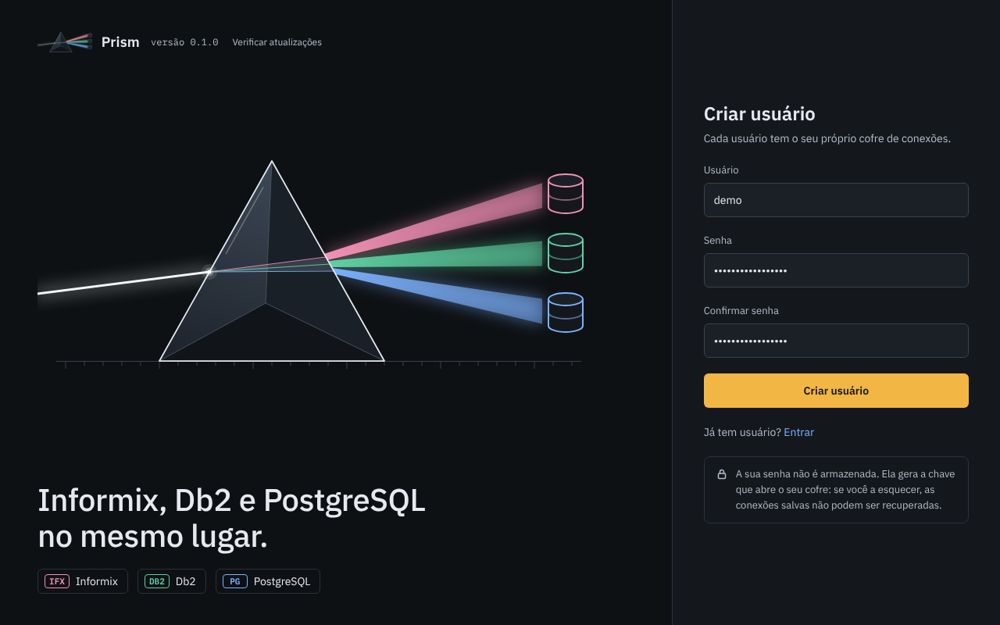
A sua senha não é armazenada. Ela gera a chave que abre o seu cofre. Se você a esquecer, as conexões salvas não podem ser recuperadas. Guarde a senha num lugar seguro.
Cada usuário tem o próprio cofre: dá para ter vários usuários na mesma máquina, e cada um só abre o dele. Sair, na barra de cima, fecha o cofre. Para trocar a senha, use Configurações › Conta.
Conexões
Criar uma conexão
- Clique em Nova conexão, na barra do navegador.
- Escolha o banco na grade e clique em Avançar.
- Preencha o nome, a pasta, o host, a porta, o banco de dados, o usuário e a senha do banco. A porta já vem sugerida: 5432 no PostgreSQL, 50000 no Db2 e 9089 no Informix.
- Clique em Testar conexão. O aviso diz “Conexão testada com sucesso.” ou “Não foi possível conectar.”, e a mensagem do banco fica abaixo dos botões.
- Clique em Salvar.

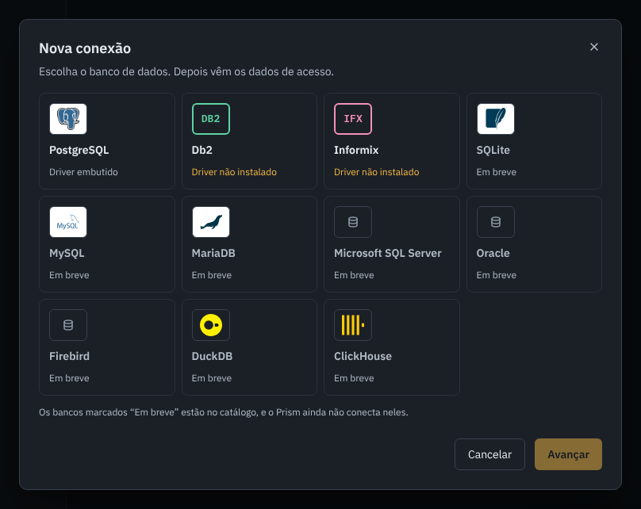

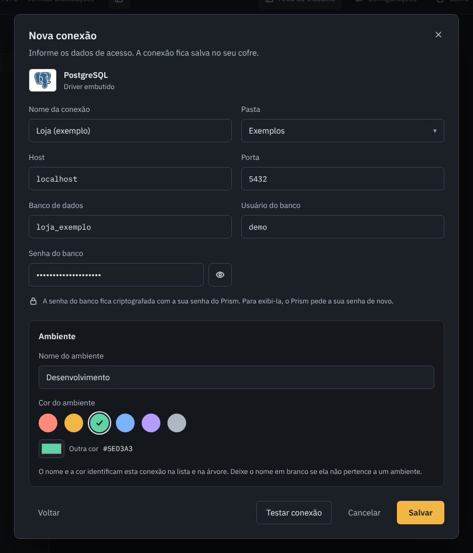
O Informix é atendido pelo protocolo DRDA. Use a porta DRDA do servidor, e não a do protocolo nativo.
Pastas, ambientes e senhas
- Pastas. “Nova pasta” cria uma pasta; o menu da pasta cria subpastas, renomeia, move e exclui. Só uma pasta vazia, sem subpastas e sem conexões, pode ser excluída. O menu da conexão tem Mover.
- Ambiente. O nome e a cor (vermelho, âmbar, verde, azul, violeta, cinza ou outra) identificam a conexão na árvore e nas abas dela. Deixe o nome em branco se a conexão não é de um ambiente.
- Senha do banco. Fica cifrada no cofre, com a sua senha do Prism. Ao editar uma conexão, deixe o campo vazio para manter a senha. Para ver a senha gravada, o Prism pede a sua senha de novo, e no quinto erro seguido o cofre fecha.
- Editar e excluir. Pelo menu da conexão. Excluir tira a conexão do cofre, com a senha gravada, e fecha as sessões e as abas de consulta dela. O SQL que estava nas abas se perde.
- Conectar. Dê um duplo clique na conexão, ou use Conectar na barra do navegador. Desconectar encerra as sessões dela.
Db2 e Informix: o driver da IBM
O Prism leva só o driver do PostgreSQL. O driver da IBM, que atende o Db2 e o Informix, você baixa quando precisar, aceitando a licença do fabricante.
- Abra Configurações › Drivers e clique em Baixar, na linha do IBM Data Server.
- Leia a licença. O Prism não abre links: copie o endereço do texto oficial e leia no navegador.
- Marque “Li e aceito a licença do fabricante” e clique em Baixar e instalar.
- O Prism baixa o driver do nuget.org, confere o hash e o grava na sua máquina.
- Depois o Prism propõe reiniciar o serviço: “Reiniciar agora” ou “Depois”. O reinício pede a sua senha de novo e fecha as abas de SQL abertas. Até ele, a barra de cima mostra “Reinício pendente”.

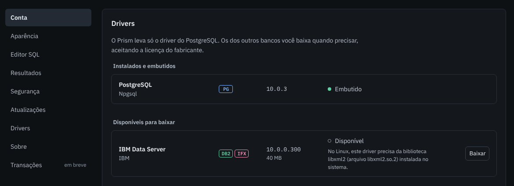
libxml2 do sistema.Dá para salvar uma conexão do Db2 ou do Informix antes de instalar o driver. Só testar e conectar pedem o driver. “Remover” tira o driver da máquina, e o serviço reinicia do mesmo jeito. A IBM não publica o driver para Mac com processador Intel: lá a grade diz “Sem driver para esta plataforma”.

Editor SQL e resultado
Para escrever SQL, escolha Nova consulta no menu de uma conexão. Cada consulta é uma aba, ligada à conexão (consulta-1.sql, consulta-2.sql e assim por diante). O texto das abas não é guardado em lugar nenhum: ao fechar a aba ou o app, ele se perde.
Executar
- Ctrl + Enter (ou o botão Executar) envia o texto selecionado. Sem seleção, envia o comando onde está o cursor.
- Uma execução leva um comando só. Os comandos se separam por
;fora de texto entre aspas, de comentário e de$tag$ … $tag$do PostgreSQL. Se a seleção tiver mais de um, o Prism avisa e não envia. - O comando vai ao banco como está, sem ser reescrito, e sempre em auto-commit (a barra de baixo mostra “Auto-commit”). Os comandos de controle de transação, como
BEGIN,COMMITeROLLBACK, são recusados. - Cancelar interrompe um comando demorado. A tela diz “Comando cancelado.” quando tem certeza de que ele não terminou.
O resultado
- Um comando que devolve linhas mostra as 200 primeiras e o tempo: “Primeiras 200 linhas · 17 ms”.
- Carregar mais 200 traz as seguintes, do mesmo cursor, sem executar de novo.
- Contar total só conta quando você pede (“Total: 232 linhas”).
- Se preferir, ligue “Buscar mais linhas ao rolar até o fim da grade” em Configurações › Resultados. O total continua só a pedido.
- Um comando sem linhas mostra “N linhas afetadas” e o tempo.
- O cursor fecha depois de 5 minutos sem leitura. O Prism avisa, e Executar de novo continua.
Células, colunas e zoom
- O valor nulo aparece como
NULL(em Configurações › Resultados dá para trocar o texto). - Texto com mais de 10.000 caracteres e valor binário chegam cortados. A célula é marcada como “Valor cortado”, e um aviso diz que alguns valores foram cortados.
- O cabeçalho de cada coluna mostra o tipo dela. Arraste a divisa para mudar a largura, e dê um duplo clique nela para ajustar ao conteúdo.
- O zoom da grade vai de 50% a 200%, pelos botões de menos e de mais ou com Ctrl + a roda do mouse sobre a grade.
- A área de resultado pode ser recolhida, maximizada ou redimensionada.
Erros
O erro do banco chega à tela como veio: a mensagem original, o SQLSTATE e, no PostgreSQL, o ponto do erro sublinhado no editor.

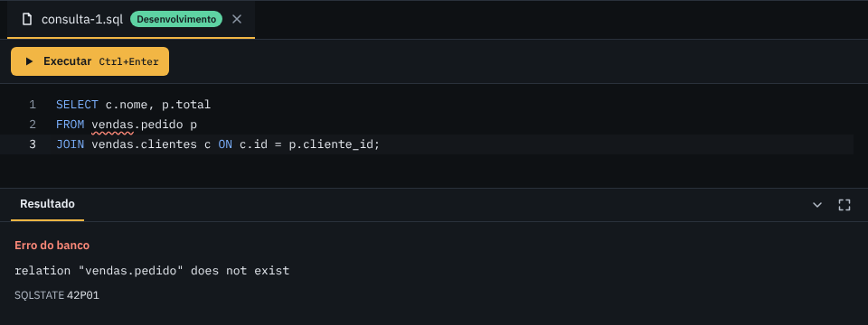
O Prism não exporta o resultado de uma consulta. A exportação em CSV está nos Registros de uma tabela.
Registros de uma tabela
Dê um duplo clique numa tabela (ou use “Abrir registros”, no menu). A aba da tabela tem três vistas: Registros, Estrutura e Diagrama. A faixa de cima mostra o banco, o esquema e o ambiente da conexão.
Registros
- Filtro e ordem. O campo aceita o que vem depois do nome da tabela: uma condição, uma ordem (
ORDER BY) ou as duas. A linha “Comando” mostra o SQL que foi executado. - Ordem pelo cabeçalho. Um clique ordena por aquela coluna, o segundo inverte e o terceiro tira a ordem. O Prism escreve o
ORDER BYno campo. - Chaves estrangeiras. O valor de uma chave estrangeira é um link: ele abre a tabela referenciada, já filtrada por esse valor.
- Mais. “Atualizar” lê de novo, “Contar total” conta, e “Exportar CSV” grava as linhas carregadas. As que ainda não foram carregadas não entram no arquivo, e os valores cortados saem cortados.

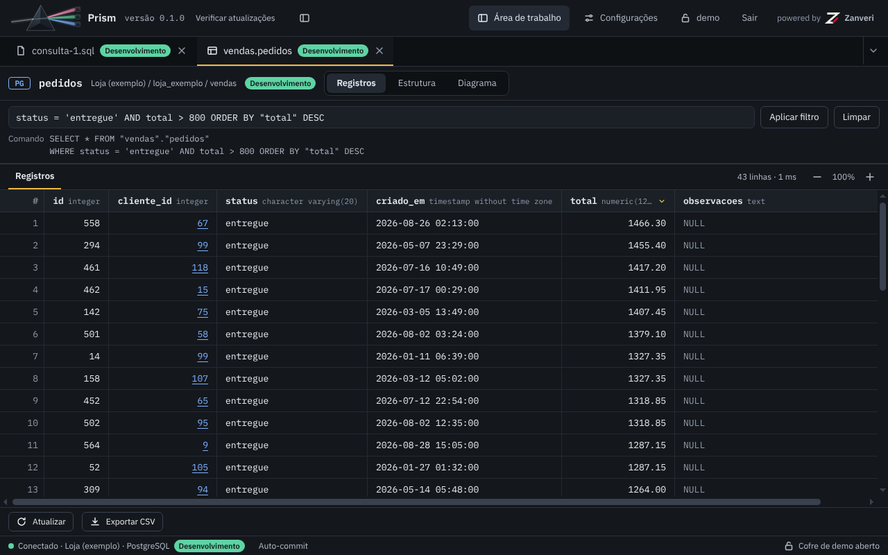
cliente_id abrem o cliente.Estrutura
Quatro seções: Colunas (nome, tipo, se aceita nulo e a chave, PK ou FK), Chaves estrangeiras, Índices e DDL. O DDL é aproximado: o Prism o monta a partir do catálogo, e ele não traz padrões, restrições de conferência nem opções de armazenamento. Há um botão para copiá-lo. Uma visão não tem DDL.
Diagrama
A tabela e as que ela referencia, com a seta saindo da chave estrangeira. Dá para ampliar, reduzir e ajustar à tela, e um duplo clique numa tabela do diagrama a abre. Só aparecem as tabelas que esta referencia: as que apontam para ela ainda não entram.

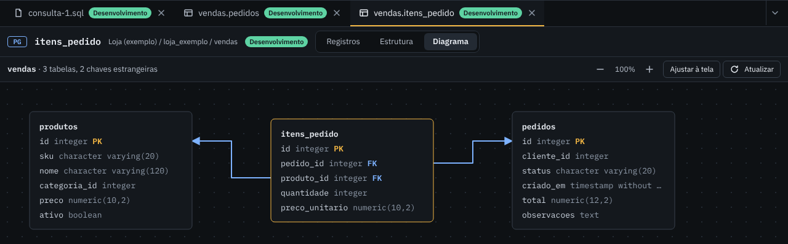
itens_pedido: duas chaves estrangeiras, duas tabelas referenciadas.Configurações
Abra pelo botão Configurações, na barra de cima, ou com Ctrl + ,. Esc fecha. As seções:
- Conta. Trocar a senha. O Prism recriptografa o seu cofre com a senha nova.
- Aparência. O tema. O Prism traz seis: Prism Escuro, Prism Claro, Monokai, Dracula, Nord e GitHub Claro. O tema vale para toda a interface, e dá para seguir o modo claro ou escuro do sistema.
- Editor SQL. A fonte, o tamanho da fonte, o tamanho da tabulação, “Autocompletar ao digitar” e “Converter palavras-chave para maiúsculas”. O autocompletar usa as palavras-chave do banco e os nomes que a árvore já carregou, e nunca consulta o banco.
- Resultados. O texto do valor nulo (de 1 a 12 caracteres) e “Buscar mais linhas ao rolar até o fim da grade”.
- Segurança. “Bloquear o Prism após” um número de minutos sem uso. Vem ligado, em 10 minutos, e aceita de 1 a 240. Bloqueado, o cofre fecha, e só a sua senha o reabre.
- Atualizações. Abaixo.
- Drivers. Veja Db2 e Informix.
- Sobre. A versão e a pasta de dados, onde ficam os cofres e o log da API.
- Transações. Marcada “em breve”: veja abaixo.

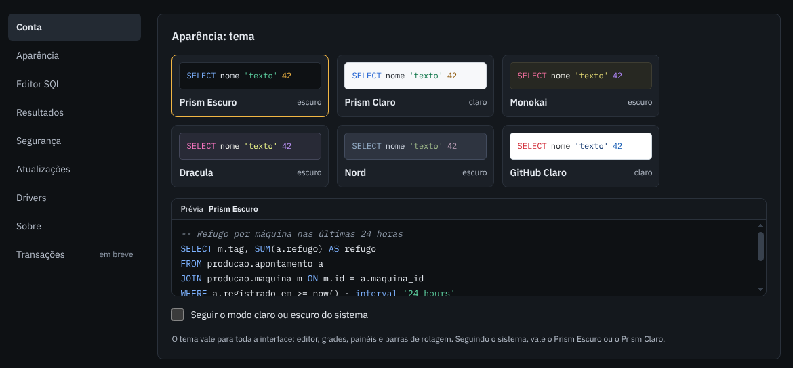

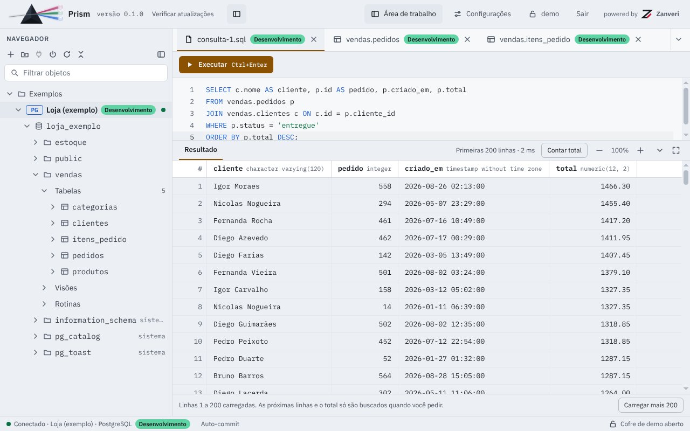
Atualizações e o canal beta
- Ao abrir, e no máximo uma vez por dia, o Prism consulta a lista de releases do projeto no GitHub, sem credencial. Havendo uma versão mais nova, mostra as notas e pergunta.
- Ele só baixa se você mandar (“Atualizar agora”). Dá para adiar, pular uma versão e desligar a verificação ao abrir. “Verificar atualizações” consulta na hora.
- A consulta não envia identificador seu nem da máquina.
- Antes de usar o arquivo, o Prism o confere contra duas somas SHA-256: a das notas da release e a do
SHA256SUMS. Se uma falta ou não bate, ele apaga o arquivo e recusa a atualização. - No Windows, “Atualizar agora” roda o instalador conferido, que reabre o Prism. No Linux e no macOS, o Prism deixa o pacote conferido na pasta de downloads e diz o que fazer.
- Canal beta. Com “Receber versões beta” desligado, que é o padrão, o Prism só oferece as versões estáveis. Ligado, oferece também os betas, e o diálogo avisa que a versão é beta e pode ter defeitos. No macOS os betas não têm pacote, então a opção não muda nada ali: as atualizações vêm com as versões estáveis.
- Só versões com pacote para o seu sistema. Se uma versão mais nova saiu sem o pacote do seu sistema (por exemplo, um pacote que falhou ao ser gerado), o Prism não a oferece: oferece a mais nova que tem o pacote, com as notas até ela, e “Verificar atualizações” diz qual versão saiu sem ele.

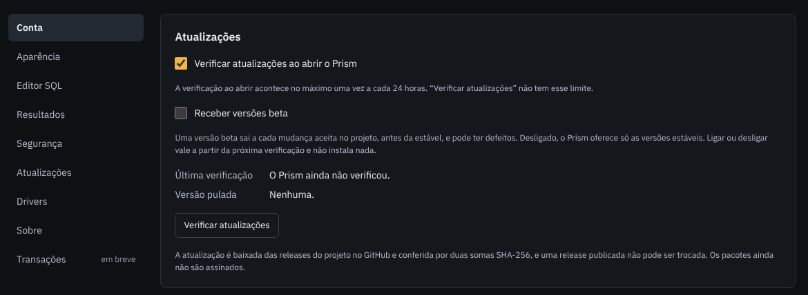
Um Prism compilado na própria máquina, ou gerado sem o endereço do projeto, não procura atualização.
Segurança e privacidade
- Cofre cifrado. As pastas e as conexões (nomes, hosts, usuários e senhas dos bancos) ficam num arquivo cifrado por usuário. Da sua senha sai, por Argon2id, a chave que protege uma chave aleatória do cofre, e o conteúdo é cifrado com AES-256-GCM. A senha do Prism não é gravada em lugar nenhum.
- Quando o cofre fecha. Em “Sair”, ao fechar o app, ao entrar com outro usuário, no quinto erro seguido ao revelar uma senha e no bloqueio por inatividade.
- API só em
127.0.0.1. A API local escuta numa porta escolhida pelo sistema a cada abertura do app e exige um token gerado a cada abertura. Sem o token, a resposta é 401. Ela aceita uma única origem de página, e o processo encerra junto com o app. - A janela. Roda com isolamento de contexto e sandbox, sem acesso direto ao Node. A interface só pode se conectar à API local, e as fontes e as imagens vão dentro do app.
- Log. O Prism não registra senha, string de conexão nem texto de SQL. Mesmo assim, revise o log antes de anexá-lo a uma issue: ele pode ter caminhos da sua máquina e mensagens de erro inesperadas.
- Software livre. O Prism é GPLv3: pode ser usado, estudado, modificado e redistribuído, desde que quem distribui entregue o código sob a mesma licença. O código está no GitHub.
O que o app consulta na rede
- Os bancos que você conecta, com os dados que você informou.
- As releases do GitHub, para procurar versão nova: ao abrir, no máximo uma vez por dia.
- O pacote da atualização e o driver do nuget.org, só quando você manda baixar.
Fora isso, o Prism não fala com a rede: não há telemetria nem conta. Esta página também não usa script, cookie nem rastreamento.
O que o Prism não protege: quem tem acesso à sessão do usuário no sistema operacional, com o app aberto e destravado, está fora da proteção do cofre.
Problemas e onde relatar
| O que acontece | O que fazer |
|---|---|
| Esqueci a senha do Prism. | Não há recuperação. O cofre não abre. Crie outro usuário e cadastre as conexões de novo. |
| O Windows ou o macOS bloqueia a abertura. | O pacote não tem assinatura de desenvolvedor. Veja como abrir. |
| “Driver não instalado” no Db2 ou no Informix. | Baixe o driver em Configurações › Drivers. Veja Db2 e Informix. |
| No Linux, o driver da IBM não abre. | Ele precisa da biblioteca libxml2 (arquivo libxml2.so.2). Instale-a pelo gerenciador de pacotes. |
| O Informix não conecta. | Use a porta DRDA do servidor (o Prism sugere a 9089), e não a do protocolo nativo. |
| “Não foi possível conectar.” | A mensagem do banco está abaixo dos botões do diálogo. Confira host, porta, banco, usuário e senha. |
| O resultado para em 200 linhas. | É o combinado: use “Carregar mais 200”, ou ligue “Buscar mais linhas ao rolar” em Configurações › Resultados. |
| “O cursor foi fechado.” | Passaram 5 minutos sem ler o resultado. Clique em “Executar de novo”. |
| O texto de uma aba de SQL sumiu. | O texto das abas não é guardado. Copie para um arquivo o que não pode perder. |
| O Prism pediu a senha sem eu sair. | Foi o bloqueio por inatividade (10 minutos, por padrão). Mude em Configurações › Segurança. |
| Não aparece atualização. | Clique em “Verificar atualizações”. Para receber betas, ligue “Receber versões beta” em Configurações › Atualizações (no macOS não há betas: as atualizações vêm com as versões estáveis). Uma versão que saiu sem o pacote do seu sistema não é oferecida até a próxima que o tiver. |
Onde relatar
- Defeito ou sugestão: abra uma issue, pelo formulário de defeito ou de sugestão. Pode escrever em inglês, português ou espanhol. Diga a versão do Prism (ela aparece na tela de entrada), o sistema operacional e o banco. Nunca anexe senha, string de conexão nem dado de cliente.
- Vulnerabilidade: não use issue, que é pública. Na página do repositório, abra a aba Security e clique em Report a vulnerability. O passo a passo está no SECURITY.pt-BR.md.
- Contribuir: leia o CONTRIBUTING.pt-BR.md.
Em breve
Isto ainda não existe. Está no plano, sem data.
- Transação manual e nível de isolamento (hoje tudo roda em auto-commit).
- Edição de célula.
- Copiar e exportar a partir da seleção na grade.
- Abas de esquema e de banco.
- Modo somente leitura e confirmação antes de comando irreversível.
- Barra própria da janela e zoom do programa inteiro.
- Assinatura Developer ID e notarização dos pacotes.